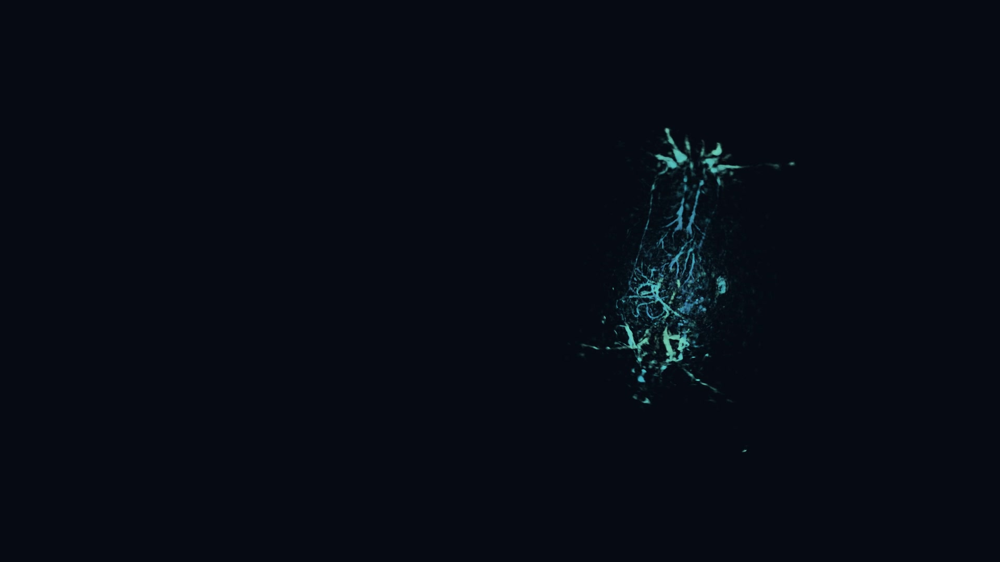
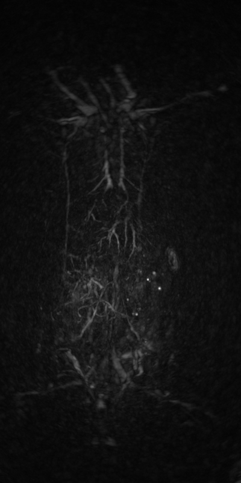

Understand the data
From sample previews to acquisition details, explore data structures, spatial scales and intended use.
DATA & CONTEXT3D PHOTOACOUSTIC TOMOGRAPHY
3D photoacoustic data, within reach.
Connecting 3D data, image enhancement and reproducible research.
01 / THE DATASET
Explore 3D photoacoustic samples, methods and research resources.
A clear path to understanding, using and citing the data.

From sample previews to acquisition details, explore data structures, spatial scales and intended use.
DATA & CONTEXT Before
Before After
AfterExplore the accompanying enhancement method, its workflow and the basis for evaluation.
METHOD & EVALUATION

Find data access, documentation and citations for reproduction, comparison and future work.
ACCESS & REPRODUCIBILITY02 / EXPLORE THE DATA
Explore by category, split or keyword.
Open a sample for the full original image and provenance.
Try another keyword or clear the current filters.
Please check that the sample file exists.
03 / IMAGE ENHANCEMENT
Drag the divider to compare, or use the arrow keys, Home and End.

GT · ReferenceProject-supplied images · Rotated 90° together · Full field of view · No added brightness adjustments
An introduction to the 3D photoacoustic image enhancement method, input/output conventions and reproducible workflow. Method details, experimental results and usage resources are pending.
Method resources in preparation
Data structure · Spatial scale · Input conventions
Method overview · Environment · Inference workflow
Visual comparison · Evaluation protocol · Scope
Illustrative structure only. The actual method will define the workflow.
04 / RESOURCES
Find data, examples and method resources here.
Verified download links will open when the materials are ready.
Standardized 3D photoacoustic imaging data and its accompanying index.
Check the license, version and citation before use.License pending
05 / PUBLICATION
The official dataset and method papers, author details and citation will be provided here.
The official citation will be provided once publication details are confirmed.
No citation available yet
06 / PEOPLE & CONTRIBUTIONS
Meet the researchers behind the project.
Find a clear path for feedback and contributions.
Team members, affiliations and roles will be introduced here.
Feedback on data use, method reproduction and documentation is welcome. Contact and contribution details will open once confirmed.